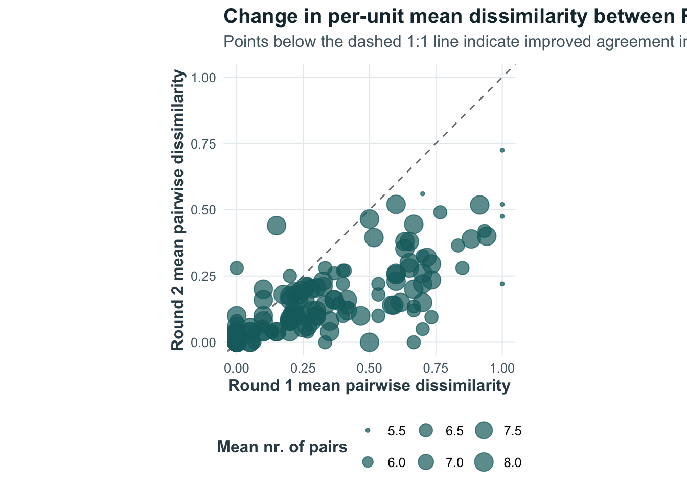
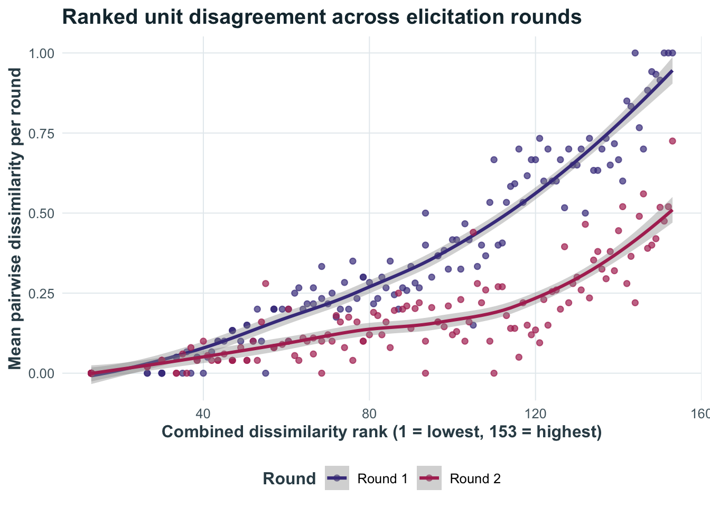
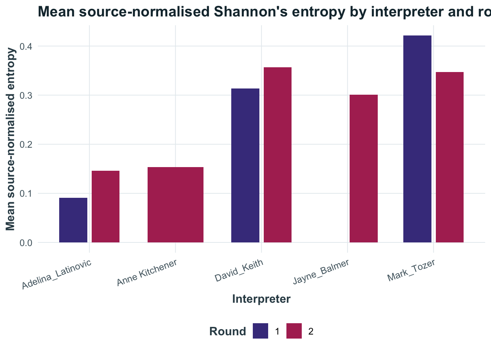
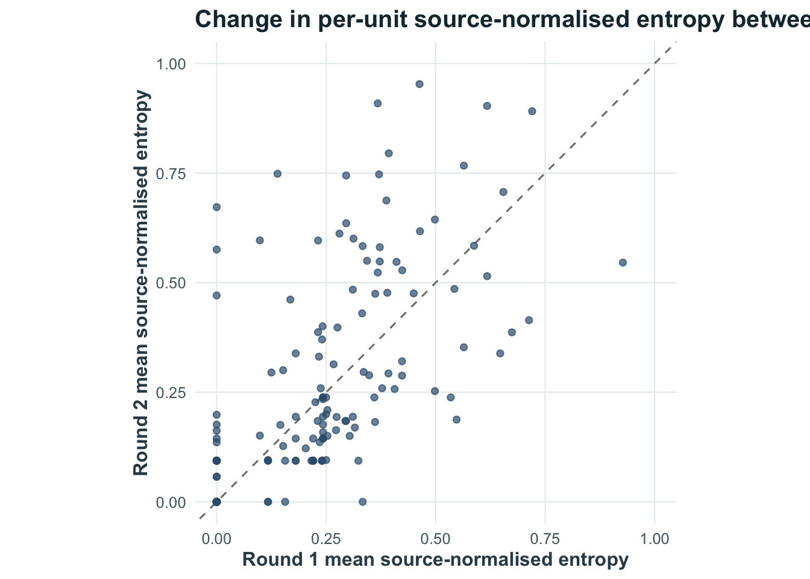
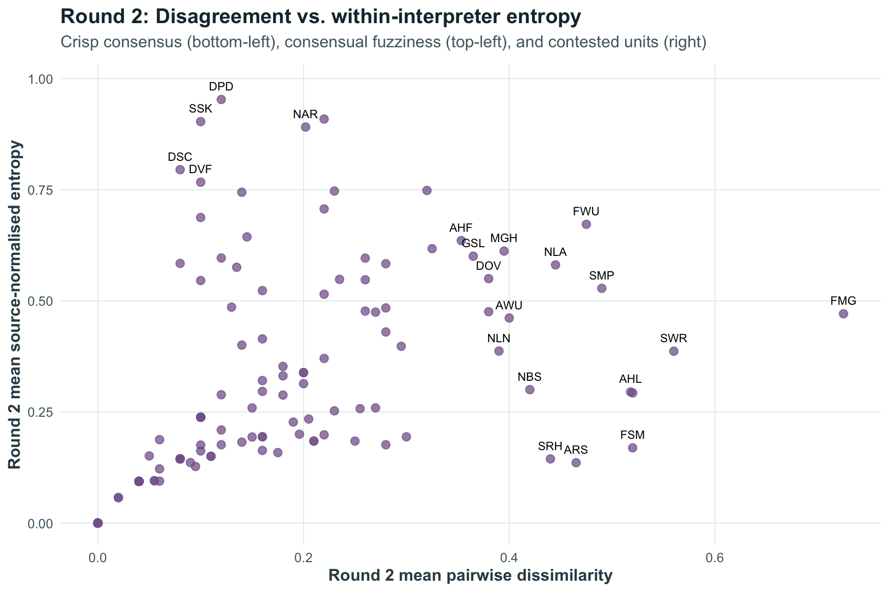

library(readr)
library(dplyr)
library(tidyr)
library(ecoSynthesis)
library(ggplot2)
here::i_am("analysis/between-rounds.qmd")
output_dir <- here::here("../results/XREFs")
source(here::here("../scripts/setup.R"))
source(here::here("../scripts/functions.R"))
load(here::here(output_dir, "lookup-tables.rda"))
load(here::here(output_dir, "memb-tables.rda"))10 Between rounds
Comparing Round 1 (Chapter 8) and Round 2 (Chapter 9) evaluates how effectively facilitated group discussion reduced inter-interpreter disagreement and reveals how interpreters adjusted their expression of fuzzy uncertainty (Martin et al. 2012; Hemming et al. 2018; IUCN 2025). Two structural differences between rounds should be kept in mind when interpreting changes:
- Panel composition: Round 1 included four interpreters (
Adelina_Latinovic,David_Keith,Jayne_Balmer, andMark_Tozer), whereas Round 2 added a fifth interpreter (Anne Kitchener). - Unit coverage: In Round 1,
Jayne_Balmerassessed 98 units andAdelina_Latinovicassessed 148 units; in Round 2, all five interpreters assessed all 153 eligible TASVEG 5.0 units.
Our setup for this R session loads ecoSynthesis, tidyverse/plotting packages, custom plot styling, and the validated lookup and multi-round membership tables:
10.1 Comparing inter-interpreter agreement between rounds
We construct separate membership_matrix objects for Round 1 and Round 2 and compute both global (by_source = FALSE) and per-source (by_source = TRUE) agreement via ecoSynthesis::calc_agreement() (see the overlap call-out in Chapter 8 explaining why calc_agreement() is preferred over the prototype pairwise_dissimilarity() helper in scripts/functions.R):
TASVEG_first <- filter(TASVEG_clean, round == 1)
TASVEG_revised <- filter(TASVEG_clean, round == 2)
mtx1 <- membership_matrix(TASVEG_first)
mtx2 <- membership_matrix(TASVEG_revised)
ag1_global <- calc_agreement(mtx1)
ag2_global <- calc_agreement(mtx2)
ag1_unit <- calc_agreement(mtx1, by_source = TRUE)
ag2_unit <- calc_agreement(mtx2, by_source = TRUE)10.1.1 Change in global agreement for returning interpreter pairs
Joining the global agreement tables across the six unique interpreter pairs present in both rounds quantifies the gain in mean similarity (delta_similarity) and share of identical unit profiles (delta_identical) following group discussion:
ag1_global |>
filter(interpreter_x < interpreter_y) |>
select(
interpreter_x,
interpreter_y,
n_r1 = n_units,
sim_r1 = mean_similarity,
id_r1 = share_identical
) |>
inner_join(
ag2_global |>
filter(interpreter_x < interpreter_y) |>
select(
interpreter_x,
interpreter_y,
n_r2 = n_units,
sim_r2 = mean_similarity,
id_r2 = share_identical
),
by = c("interpreter_x", "interpreter_y")
) |>
mutate(
delta_similarity = round(sim_r2 - sim_r1, 3),
delta_identical = round(id_r2 - id_r1, 3)
) |>
arrange(desc(delta_similarity))# A tibble: 6 × 10
interpreter_x interpreter_y n_r1 sim_r1 id_r1 n_r2 sim_r2 id_r2
<chr> <chr> <int> <dbl> <dbl> <int> <dbl> <dbl>
1 Adelina_Latinovic Mark_Tozer 148 0.671 0.351 153 0.859 0.405
2 Jayne_Balmer Mark_Tozer 98 0.609 0.337 153 0.794 0.261
3 David_Keith Mark_Tozer 153 0.680 0.261 153 0.838 0.333
4 Adelina_Latinovic David_Keith 148 0.727 0.432 153 0.842 0.444
5 David_Keith Jayne_Balmer 98 0.697 0.429 153 0.787 0.294
6 Adelina_Latinovic Jayne_Balmer 98 0.847 0.776 153 0.853 0.484
# ℹ 2 more variables: delta_similarity <dbl>, delta_identical <dbl>Every returning interpreter pair increased in mean similarity in Round 2 (typically by \(+0.10\) to \(+0.24\)), reflecting substantial convergence after discussing conceptual boundaries and ambiguous vegetation descriptions.
10.1.2 Unit-level shift in pairwise dissimilarity
Next, we summarise per-source disagreement for each round and join the two summaries by VEGCODE. Units falling below the 1:1 diagonal in the scatter plot experienced reduced disagreement in Round 2, while units near or above the diagonal represent persistent conceptual disagreements:
summarise_unit_disagreement <- function(ag_unit) {
ag_unit |>
group_by(VEGCODE = source) |>
summarise(
mean_dissimilarity = mean(dissimilarity),
min_dissimilarity = min(dissimilarity),
max_dissimilarity = max(dissimilarity),
n_pairs = n(),
.groups = "drop"
)
}
dis1 <- summarise_unit_disagreement(ag1_unit)
dis2 <- summarise_unit_disagreement(ag2_unit)
dis_both <- dis1 |>
left_join(dis2, by = "VEGCODE", suffix = c("_r1", "_r2")) |>
mutate(
delta_diss = mean_dissimilarity_r2 - mean_dissimilarity_r1,
combined_rank = rank(mean_dissimilarity_r1 + mean_dissimilarity_r2)
)
ggplot(dis_both, aes(x = mean_dissimilarity_r1, y = mean_dissimilarity_r2)) +
geom_abline(intercept = 0, slope = 1, linetype = "dashed", colour = "grey50") +
geom_point(
aes(size = (n_pairs_r1 + n_pairs_r2) / 2),
alpha = 0.7,
colour = teal_high
) +
labs(
title = "Change in per-unit mean dissimilarity between Round 1 and Round 2",
subtitle = "Points below the dashed 1:1 line indicate improved agreement in Round 2",
x = "Round 1 mean pairwise dissimilarity",
y = "Round 2 mean pairwise dissimilarity",
size = "Mean nr. of pairs"
) +
coord_equal(xlim = c(0, 1), ylim = c(0, 1)) +
theme_wp3()
Ordering all 153 TASVEG communities by their combined dissimilarity rank and fitting LOESS smoothers for each round highlights the systematic downward shift in disagreement across almost the entire spectrum of units:
ggplot(dis_both) +
geom_point(
aes(x = combined_rank, y = mean_dissimilarity_r1, colour = "Round 1"),
alpha = 0.7
) +
geom_smooth(
aes(x = combined_rank, y = mean_dissimilarity_r1, colour = "Round 1"),
formula = y ~ x,
method = "loess",
span = 0.75,
se = TRUE
) +
geom_point(
aes(x = combined_rank, y = mean_dissimilarity_r2, colour = "Round 2"),
alpha = 0.7
) +
geom_smooth(
aes(x = combined_rank, y = mean_dissimilarity_r2, colour = "Round 2"),
formula = y ~ x,
method = "loess",
span = 0.75,
se = TRUE
) +
labs(
title = "Ranked unit disagreement across elicitation rounds",
x = "Combined dissimilarity rank (1 = lowest, 153 = highest)",
y = "Mean pairwise dissimilarity per round"
) +
scale_colour_manual(
name = "Round",
values = c("Round 1" = "slateblue4", "Round 2" = "maroon")
) +
theme_wp3()
10.2 Comparing Shannon’s entropy between rounds
In addition to tracking inter-interpreter agreement, we compare normalised Shannon’s entropy across rounds directly using ecoSynthesis::calc_entropy_tbl() on the multi-round TASVEG_clean table.
NoteMulti-round grouping in
ecoSynthesis::calc_entropy_tbl()
In ecoSynthesis v0.0.0.9005, calc_entropy_tbl() automatically groups calculations by the round column internally (so passing the full multi-round TASVEG_clean produces side-by-side Round 1 and Round 2 statistics in a single call). By contrast, passing an explicit round = ... argument is not yet implemented and emits a warning.
First, we compare overall mean entropy and per-interpreter mean entropy between Round 1 and Round 2:
ent_overall <- calc_entropy_tbl(TASVEG_clean, overall = "overall")
ent_overall# A tibble: 2 × 4
round mean_entropy_source_norm…¹ mean_entropy_interpr…² mean_entropy_set_nor…³
<dbl> <dbl> <dbl> <dbl>
1 2 0.261 0.323 0.0767
2 1 0.228 0.285 0.0642
# ℹ abbreviated names: ¹mean_entropy_source_normalised,
# ²mean_entropy_interpreter_normalised, ³mean_entropy_set_normalisedent_by_interp <- calc_entropy_tbl(TASVEG_clean, overall = "by_interpreter")
ent_by_interp# A tibble: 9 × 5
expert round mean_by_interpreter_entropy_s…¹ mean_by_interpreter_…²
<chr> <dbl> <dbl> <dbl>
1 Mark_Tozer 1 0.421 0.510
2 David_Keith 2 0.356 0.434
3 Mark_Tozer 2 0.347 0.432
4 David_Keith 1 0.314 0.393
5 Jayne_Balmer 2 0.301 0.350
6 Anne Kitchener 2 0.154 0.205
7 Adelina_Latinovic 2 0.146 0.194
8 Adelina_Latinovic 1 0.0912 0.128
9 Jayne_Balmer 1 0 0
# ℹ abbreviated names: ¹mean_by_interpreter_entropy_source_normalised,
# ²mean_by_interpreter_entropy_interpreter_normalised
# ℹ 1 more variable: mean_by_interpreter_entropy_set_normalised <dbl>Plotting interpreter-level mean source-normalised entropy across rounds shows an instructive pattern: while inter-interpreter disagreement dropped sharply in Round 2, within-interpreter entropy increased for Jayne_Balmer (who moved from exclusively 100% single-EFG assignments in Round 1 to fuzzy multi-EFG profiles in Round 2) and Adelina_Latinovic, whereas Mark_Tozer’s entropy decreased slightly as assignments sharpened:
ggplot(
ent_by_interp,
aes(
x = expert,
y = mean_by_interpreter_entropy_source_normalised,
fill = factor(round)
)
) +
geom_col(position = position_dodge(width = 0.75), width = 0.65) +
scale_fill_manual(
name = "Round",
values = c("1" = "slateblue4", "2" = "maroon")
) +
labs(
title = "Mean source-normalised Shannon's entropy by interpreter and round",
x = "Interpreter",
y = "Mean source-normalised entropy"
) +
theme_wp3() +
theme(axis.text.x = element_text(angle = 20, hjust = 1))
Next, we reshape unit-level source-normalised entropy (overall = "by_source") wide by round to compare how individual TASVEG units shifted in within-interpreter fuzziness between rounds:
ent_by_source <- calc_entropy_tbl(TASVEG_clean, overall = "by_source")
ent_wide <- ent_by_source |>
select(VEGCODE, round, entropy = mean_by_source_entropy_source_normalised) |>
pivot_wider(
names_from = round,
values_from = entropy,
names_prefix = "entropy_r"
)
ggplot(ent_wide, aes(x = entropy_r1, y = entropy_r2)) +
geom_abline(intercept = 0, slope = 1, linetype = "dashed", colour = "grey50") +
geom_point(alpha = 0.7, colour = "#355C7D") +
labs(
title = "Change in per-unit source-normalised entropy between rounds",
x = "Round 1 mean source-normalised entropy",
y = "Round 2 mean source-normalised entropy"
) +
coord_equal(xlim = c(0, 1), ylim = c(0, 1)) +
theme_wp3()
10.3 Disagreement vs. fuzziness: decomposing Round 2 uncertainty
Combining Round 2 mean pairwise dissimilarity (inter-interpreter disagreement) with Round 2 mean source-normalised entropy (within-interpreter fuzziness) separates three distinct ecological regimes across the 153 TASVEG communities:
- Bottom-left (low dissimilarity, low entropy): crisp, high-consensus 1:1 mappings to a single IUCN GET EFG.
- Top-left (low dissimilarity, high entropy): consensual fuzziness — interpreters agree with one another that the TASVEG community is inherently transitional or composite across multiple EFGs.
- Right (high dissimilarity): contested units where interpreters still hold diverging conceptual assignments after Round 2 discussions.
uncertainty_r2 <- dis2 |>
left_join(
ent_by_source |>
filter(round == 2) |>
select(
VEGCODE,
mean_entropy = mean_by_source_entropy_source_normalised
),
by = "VEGCODE"
)
ggplot(uncertainty_r2, aes(x = mean_dissimilarity, y = mean_entropy)) +
geom_point(alpha = 0.75, colour = "#84659A", size = 2.5) +
geom_text(
data = filter(
uncertainty_r2,
mean_dissimilarity > 0.35 | mean_entropy > 0.75
),
aes(label = VEGCODE),
nudge_y = 0.03,
size = 3,
check_overlap = TRUE
) +
labs(
title = "Round 2: Disagreement vs. within-interpreter entropy",
subtitle = "Crisp consensus (bottom-left), consensual fuzziness (top-left), and contested units (right)",
x = "Round 2 mean pairwise dissimilarity",
y = "Round 2 mean source-normalised entropy"
) +
theme_wp3()